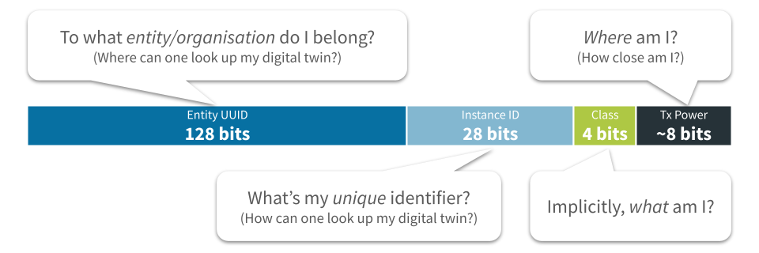

The InteroperaBLE Identifier
An open specification by reelyActive to maximise the interoperability of radio-identifiers across protocols, platforms and operating systems.
The TL;DR (Too Long; Didn't Read)
One identifier to rule compatible with them all.
- What's the purpose?
- To provide a means of identification that can be interpreted by all platforms and readily translated into a URI for potential association with a digital twin.
- What's with the BLE?
- The open specification was motivated by Bluetooth Low Energy (BLE) interoperability challenges, but is in fact protocol-agnostic.
- Can anyone use this?
- Yes. It is an open specification and advlib-interoperable is an open source interpreter implementation which is embedded in Pareto Anywhere.
InteroperaBLE Identifier structure Part 1 of 2
The identifier consists of four elements which facilitate identification, ranging/location and the lookup of digital twins.
- Why digital twins?
- A digital twin represents, in a machine-readable-way, the product, person or place with which the identified device is associated.
- Why ranging/location?
- Knowing where the identified device is, and/or what it is near, contributes additional machine-readable context.
The four elements
An InteroperaBLE Identifier consists of an Entity UUID, an Instance ID, a transmission power estimation (Tx Power) and an optional Class.
| Element | Size | Role | |
|---|---|---|---|
| Entity UUID | 128-bits | Identifies the entity or organisation responsible for the device (see Entity UUID subsection below) |
|
| Instance ID | 28-bits | Uniquely identifies the individual device (which itself may identify a person, product or place) |
|
| Class | 4-bits | OPTIONAL Implicitly indicates what is associated with the device, and/or its hierarchy | |
| Tx Power | — | Facilitates the estimation of proximity, range and/or location |
Entity UUID
The Entity UUID is a 128-bit Version 4 (Random) UUID which observes the following form:
XXXXXXXX-XXXX-MXXX-NXXX-XXXXXXXXXXXX
Each character is hexadecimal (0-9, a-f) with the following constraints:
- X
- Any value
The entire UUID must be unique from that of other entities and organisations - M
- Must be 4 to represent Version 4
- N
- Upper bits must be 10b to represent Variant 1
Valid values for N are therefore 8, 9, a or b
Implementations
The InteroperaBLE Identifier is implemented as Eddystone-UID or iBeacon as detailed below:
- Entity UUID
- Implement as 80-bit elided UUID in the Namespace.
- Instance ID
- Implement in 28 least-significant bits of Instance.
- Class
- Implement in bits 28-31 of Instance.
- Tx Power
- Implement in Ranging byte.
The elided UUID has the form XXXXXXXX-XXXX-MXXX-NXXX-XXXXXXXXXXXX where 48-bits are removed from the 128-bit Entity UUID as indicated by the strikeout, as specified in the Eddystone documentation.
- Entity UUID
- Implement as 128-bit UUID in the Proximity UUID.
- Instance ID
- Implement in 28 least-significant bits of combined Major & Minor.
- Class
- Implement in the 4 most significant bits of the Major.
- Tx Power
- Implement in Signal Power byte.
InteroperaBLE Identifier interpretation Part 2 of 2
How to look up a device's digital twin from the elements of its InteroperaBLE Identifier.
- Look up how?
- By assembling a URI that points to a digital twin on the Internet or on a local network.
- For any device?
- No. A URI can only be assembled when the procedure to do so is explicitly known for the given Entity UUID.
Entity UUID interpretation as URI
To be completed...
Entity UUID alternative interpretations
An InteroperaBLE Identifier may alternatively be interpreted as something other than a URI. In this case, the 28-bit identifier typically represents an index into a table associated with the Entity UUID.
Unicode Code Point
Interpret the Instance ID as a single Unicode code point (i.e. as UTF-32). The Unicode standard includes over 144,000 characters, including a growing list of emojis, which can be encoded in an InteroperaBLE Identifier, provided they consist of a single code point.
- Entity UUID
- 496f4944-434f-4445-b73e-5554462d3332
- Elided Entity UUID
- 496f49445554462d3332
For example, Instance ID 0x001f989 would be interpreted as 🦉 (owl emoji)
Button
Interpret as a button press event. Devices such as Minew button wristbands do not transmit button status explicitly in a packet payload, but rather can be configured to transmit a predefined packet (ex: iBeacon or Eddystone) following a button press.
- Entity UUID
- 496f4944-434f-4445-b73e-427574746f6e
- Elided Entity UUID
- 496f4944427574746f6e
The Instance ID may be ignored. The interpretation is that the device transmitting this Entity UUID is signalling a button press event.
BlueUp "Safety"
Interpret as a BlueUp "Safety" packet. BlueBeacon series devices from BlueUp embed real-time personal safety data, such as button presses, in the minor identifier of an iBeacon packet. By configuring such devices to use the Entity UUID below as the iBeacon UUID, this data can be interpreted from the Instance ID.
- Entity UUID
- 496f4944-434f-4445-b73e-425553616665
For example, Instance ID 0x0008001 would be interpreted as a short button press and a battery level of 2.99V (consult the BlueUp technical documentation for details).
Where to next?
Continue exploring our open architecture and all its applications.
-

-
Best practices for BLE identifiers
Assignment of Bluetooth Low Energy (BLE) identifiers for interoperability and interpretability.
-
reelyActive Developers
Browse all developer documentation and tutorials.